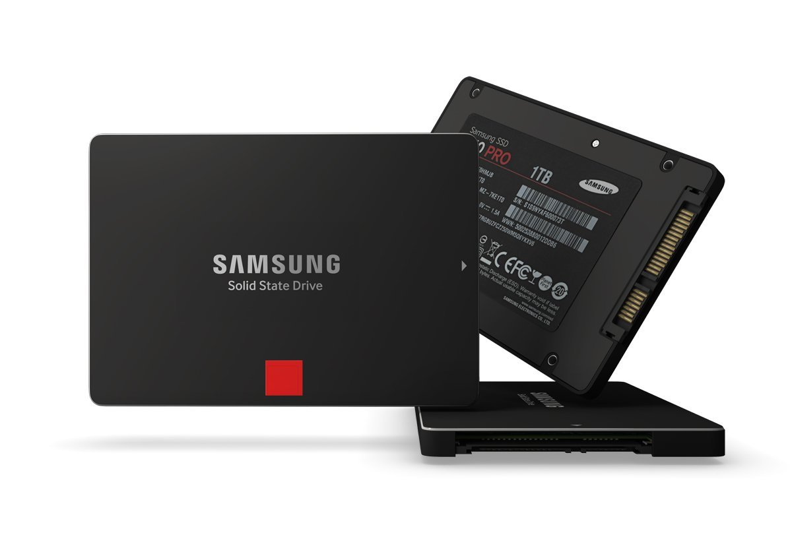

이 문서는 링크연결에 큰 문제가 존재합니다 추후 수정될 것 입니다.
기존의 BIOS/UEFI와 OS가 SSD의 플래시 메모리를 HDD와 유사한 구조로 인식하고 사용할 수 있도록 해 준다.
이 과정에서 하나의 셀만 반복해서 사용하는 일이 없도록 데이터를 분산시켜 저장한다.
분산된 데이터가 어느 셀에 가 있는지 알려주는 페이징 파일을 저장 및 분석하여 사용하지 않은 셀을 먼저 사용할 수 있도록 하고, 오류 없이 데이터를 불러올 수 있도록 해 준다.
간단하게 말하자면, 이 놈이 읽기, 쓰기, 수명관리까지 다 해준다. 원래는 기존의 플래터 기반 파일 시스템을 사용하는 컴퓨터들을 위한 변환장치에 불과했다가 주객전도가 되어 SSD에서 가장 중요한 부품이 되어 버린 것이다. 따라서 컨트롤러의 데이터 분석 및 데이터 분산이 비효율적이면 읽기와 쓰기 속도가 매우 느려질 수 있으며, 심지어는 데이터가 손실되기도 한다. 반대로 컨트롤러가 효율적이라면 TLC 메모리를 사용해도 좋은 속도와 훌륭한 안정성을 담보할 수 있다.
2018년 3월 기준, 컨트롤러 시장은 크게 자체 개발 컨트롤러와 마벨, 실리콘모션의 셋으로 나뉜다. 점유율이 가장 높은 삼성은 자체적으로 컨트롤러를 개발하고 있으며, 이외 인텔이나 도시바처럼 마벨과 협력해서 자체적인 컨트롤러를 개발하여 자사 제품에만 사용하는 회사들이 있다.그리고 이 회사들 이외에는 고급형에는 마벨 컨트롤러를, 저가형에는 실리콘모션 컨트롤러를 주로 사용하고 있다. 실리콘은 저가형에 주로 쓰이니만큼 그렇게 성능이 좋지는 않다. 컨트롤러는 삼성이나 마벨의 것이 훨씬 좋다고 보는 평이 지배적이다.
삼성전자가 자사의 SSD에 사용하는 자사 컨트롤러이다. 장점은 자사 컨트롤러이므로 펌웨어 최적화가 잘 되어 있다는 점, 마벨 컨트롤러나 인텔 못지 않은 안정성과 뛰어난 성능을 가졌다. 컨트롤러는 ARM 계열의 칩 설계 경험으로 익힌 기술력을 발휘했다. 삼성 자료에 따르면 300~400MHz연산 코어를 3개 이상 두어 높은 연산력을 바탕으로 고도의 알고리즘을 구현한다.
컨트롤러 네이밍은 MxX이다. MAX(470), MBX(실제로 들어간 상품은 없음), MCX(830), MDX(840/840 PRO)를 거쳐 현 세대 컨트롤러명은 MEX(840 EVO / 850 PRO, EVO 1TB), MGX(850 EVO / 750 EVO), UBX(950 PRO. OEM인 SM951에도 이 컨트롤러가 쓰인다.) 2016년 CM871a부터 컨트롤러의 작명이 바뀌었다.
MEX 컨트롤러를 쓴 TLC 모델(840 Basic, 840 Evo)에서 장기간 사용하지 않은 파일을 읽을 때 속도가 엄청나게 느려지는 문제가 발생하였다. 추후 840 EVO용 펌웨어가 나왔으며, 수명을 깎는 셀 리프래시로 해결된다. 삼성 입장에 따르면 초기 펌웨어의 저장 방식에 문제가 있고 이를 해결하기 위해 리프레시를 한다는 것이다. 수명을 깎는 것 자체는 큰 문제가 없지만(840 EVO 120GB의 쓰기수명은 750~800TB 수준으로 일반적인 사용 용도로는 쓰기 수명을 다 사용할 수 없다.) 리콜을 해야하는 사안에서 수명을 깎아먹는 펌웨어 업데이트로 땜빵한 것에 대해서 커뮤니티에서 볼멘소리가 많았고 한동안 삼성 SSD는 쳐다보지 않겠다는 사람들도 많았었지만, 현재는 잠잠해진 것 같다. 추후에 같은 문제가 발생할지는 두고 볼 문제이지만, 잠정적 결론으로는 MEX 컨트롤러와 당시 자사에서 생산, 채용하던 TLC NAND 메모리 칩의 문제로 추측되고 있다. 840 EVO 제품 외 OEM, 840 모델 등에는 해당 펌웨어를 제공하지 않아 욕을 먹었다.
서버급의 안정성을 가진다고 홍보한다. 벤치마크와 실제 속도가 비슷하고 안정성이 뛰어나며, 그만큼 A/S 기간도 길다는 장점이 있다. 다만 가격이 조금 비싼 편이며, 용량에 따른 쓰기 속도의 편차가 꽤 심한 편. 기종에 따라 120GB대에선 매우 처참한 쓰기 성능을 보이는 사례가 꽤 있다. 또한 근래 1TB 미만 SSD에서 더티상태 성능저하가 매우 심한 것으로 드러나 그 명성에 크게 흠집이 생겼다. 물론 1TB 이상 제품군에선 일관적으로 좋은 성능을 보여주고 있다.
마벨은 여러 회사들과의 협력을 통해 고급 컨트롤러 설계 및 생산자로서의 입지를 굳혔으며, 플렉스터, 인텔, 샌디스크, 마이크론, 도시바 등이 자사의 고급형 SSD에 마벨의 컨트롤러나 마벨 컨트롤러를 개조한 물건을 사용하고 있다.[출처 필요]
2018년 기준으로 단가절감을 문제로 많이 쓰이지 않는다. 그래도 WD(샌디스크)만큼은 아직도 마벨컨트롤러를 사용하며 2위 자리를 지키는 중.
주로 중저가형에서 보이는 SMI 컨트롤러를 생산한다. 마이크론이 보급형 SSD인 크루셜 MX100의 후속작인 BX100을 내놓으면서 성능 및 단가의 차이를 둔다고 마벨 컨트롤러를 실리콘모션 컨트롤러로 바꿨는데, 의외로 성능 이슈가 없어 널리 쓰이기 시작했다. 특히 같은 가격대에 있는 샌드포스 컨트롤러에 비해 랜덤 입출력 성능이 뛰어나 저가형 SSD들을 섭렵하였다. 국내에서는 2014년 리뷰안테크를 시작으로 실리콘모션 컨트롤러를 채용한 SSD들이 많이 들어왔다. 저용량 SSD제품들은 대부분 쓰기속도가 느린 단점이 있으나 어떤 낸드플래시를 몇 개의 채널로 사용하느냐에 따라 같은 용량이라도 쓰기성능이 천차만별이다.
따로 제작된 툴이 없어 펌웨어 업데이트가 어려운 단점이 있다. 프리징 문제가 있는 초기 버전의 경우 제조사, 유통사에 보내 처리하여야 하지만, 2015년 말 이후 유통되는 제품들은 모두 해당 문제들이 해결된 상태로 유통되기 때문에 큰 문제는 없다.
2016년 기준 국내에서 쓰이는 컨트롤러는 주로 SM2246EN과 SM2246XT가 있다. SM2246EN의 경우 중저가형 SSD에 많이 보이며, SM2246XT의 경우 저가형에서 많이 보이고 있다. 컨트롤러 스펙 카달로그 SM2246EN의 성공(?)과 샌디스크 저가형의 SM2246XT 사용으로 사용자 층이 급격히 늘어나는 중. 하지만 XT의 경우 SLC 캐시의 한계를 넘어설 경우 하드보다 느려지는 제품이 있다. SM2246XT에 중소기업 제품이면 어떤 특가를 하든지 사지 않는것이 정신건강에 좋다.
2018년 기준 저가형 SSD에 주로 탑재되는 SM2258XT는 DRAM 캐시가 없고 TLC 셀 중 일부를 SLC 캐싱하여 사용하는데, 이를 사용한 제품에서 SSD 용량의 3분의 1 이상 데이터를 저장하면 속도가 급감하는 현상이 발생하고 있다.
도시바가 SSD시장 공략을 위해 마벨과 협력해 만든 컨트롤러. 도시바 Q시리즈에 적용됐다. 그런데 더티 상태에서의 성능 하락이 매우 크다플레이웨어즈 더티 테스트 결과
후에 나온 Q pro에 적용된 컨트롤러는 다소 개선되어 예전 같은 큰 성능하락폭을 보여주지는 않는다. 이러한 문제는 있지만 실사용에서 큰 불편은 느끼기 어렵다고 한다.
파이슨은 좀 특이한 경우인데, 자체적인 SSD 설계 능력이 없는 회사에 ODM 제품을 팔아먹는 회사다. 예컨대 커세어의 고가형 USB 드라이브는 파이슨이 컨트롤러뿐만이 아니라 제품의 모든 부분들을 설계, 생산하고 여기에 커세어 브랜드만 붙여서 파는 제품이다. 즉, 파이슨의 컨트롤러를 사용하는 제품이라면 파이슨이 상표 빼고 다 만든 ODM 제품이라고 생각하면 된다. 국내 중소업체 제품 일부도 이런 방식으로 파이슨이 생산하고 있다. 2016년 하반기에 접어들면서 이 회사의 NVMe 인터페이스를 지원하는 컨트롤러를 장착한 제품들이 나오고 있다.
그런데 'CrystalDiskinfo'같은 프로그램으로 사용 횟수와 작동 시간은 알 수 있지만 누적 읽기/쓰기량은 알 수 없는 경우가 있다. 그런 경우 이 회사의 컨트롤러를 장착한 SSD는 'SATA Tool Box_Complete'라는 전용 소프트웨어를 써야만 한다. 이를 통해 SSD의 남은 내구성과 평균 지움 횟수를 알 수 있으며 더 정확한 S.M.A.R.T 정보를 확인할 수 있다. 이외에도 최적화 툴이나 펌웨어 업그레이드를 지원하지만 다른 제조사에서 홍보하는 마이그레이션 툴은 지원하지 않는다.
PS3107-S7: 캐시 RAM 미포함, 최대 용량 256GB, AES 미지원, S-ATA 3Gbps까지만 지원하는 초기형 모델이다.
PS3108: DDR3 캐시 RAM, 최대 용량 1TB
PS3109: LPSDR 캐시 RAM, 최대 용량 256GB
PS3110: DDR3/L 캐시 RAM, 최대 용량 2TB, 쿼드 코어
PS3111: DRAM 없음, 최대용량 1TB, 싱글 코어, AES 미지원
PS5007: DDR3L 캐시 RAM, 최대용량 2TB, NVMe1.1b 지원
PS5008: NVMe1.2 지원
MLC 초기 시대를 풍미하던 컨트롤러로, 특유의 압축 기술을 사용해 높은 성능 및 낸드 수명을 보여주며 크게 각광을 받았다. 그러나 OCZ 사의 제품들을 중심으로 초기형 샌드포스 컨트롤러에선 많은 프리징 및 불량 문제가 발생하기도 했다. 압축/비압축 방식에 따라 편차가 매우 큰 컨트롤러의 고유 특성 때문에 벤치마크에서는 가장 속도가 빨랐다. 그럼에도 벤치마크도 압축하기 힘든 무작위 패턴의 벤치를 돌리면 성능이 매우 안 나왔다. 결국 중/고급형에선 서서히 외면받기 시작했다. 때문에 2015년에 들어와서는 보급형 점유율도 실리콘모션 및 파이슨에 밀리면서 시장에서 거의 보기 힘들어졌고 인텔의 53X 시리즈나 ADATA 900 등을 제외하곤 명맥이 거의 끊긴 상태.
2014년 시게이트사가 인수 했다고 한다. http://www.anandtech.com/show/8073/seagate-acquires-sandforce-from-avagolsi
현재는 시게이트SSD에 시게이트 컨트롤러로 출시중이다.
Micron 과는 관련 없다.
Maxiotek 컨트롤러로 나름 악명(?)이 높다.
저가형 SSD에서 많이 보이는 컨트롤러. 안정성이나 성능이나 딱 저가형스럽다.
샌드포스가 잃어버린 시장을 실리콘 모션과 함께 야금야금 먹고 있는 중이었으나 2018년기준 실리콘모션과 파이슨에게 저가형시장에서 많이 먹혀 요즘은 유사SSD이외에는 보기가 힘들다.
